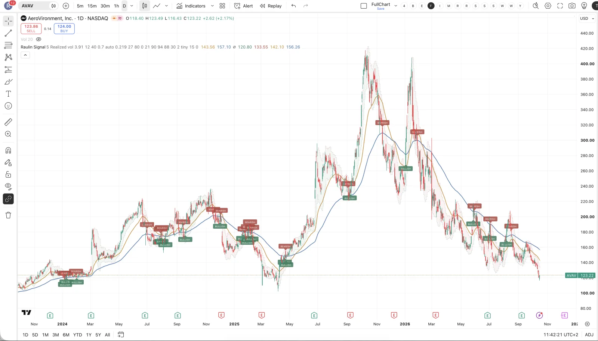
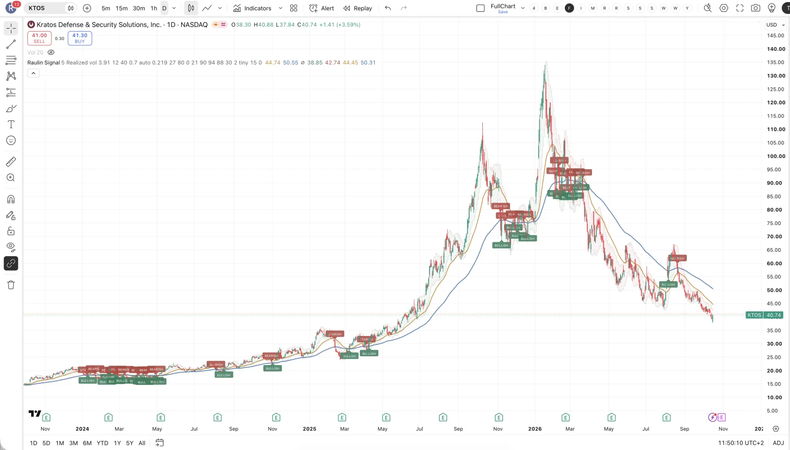
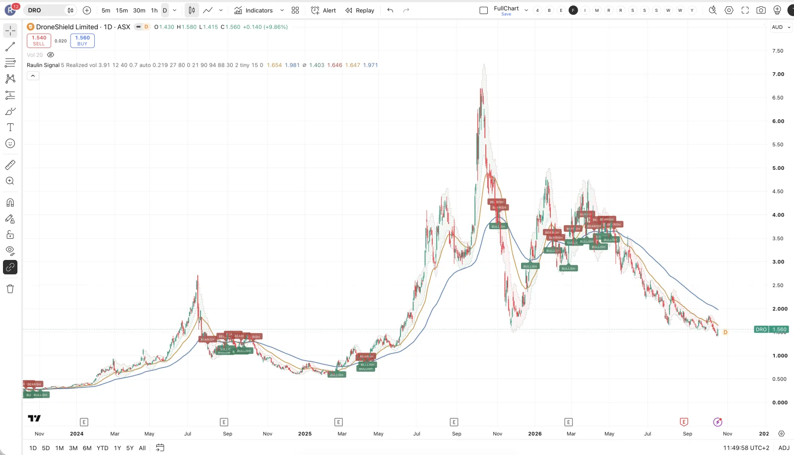
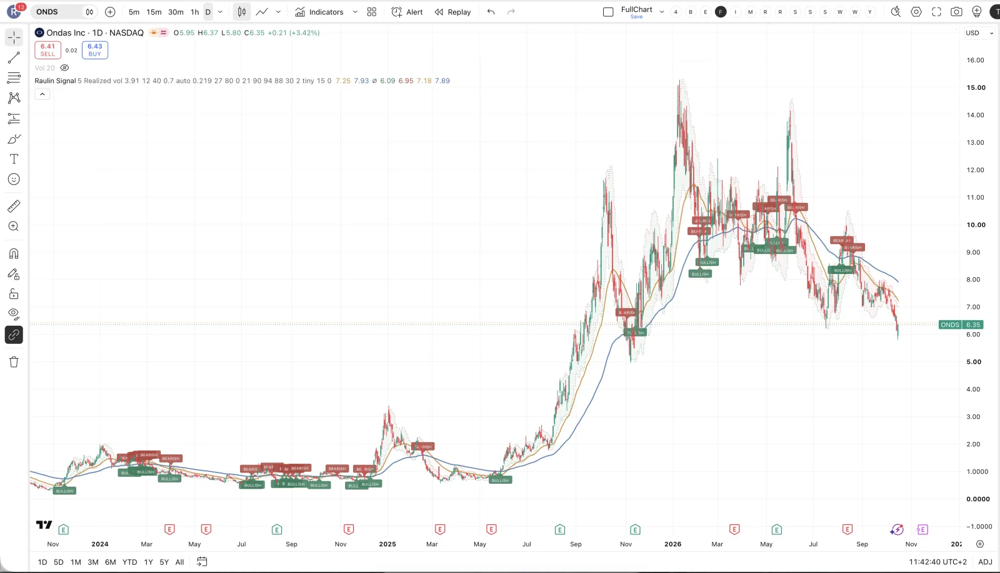
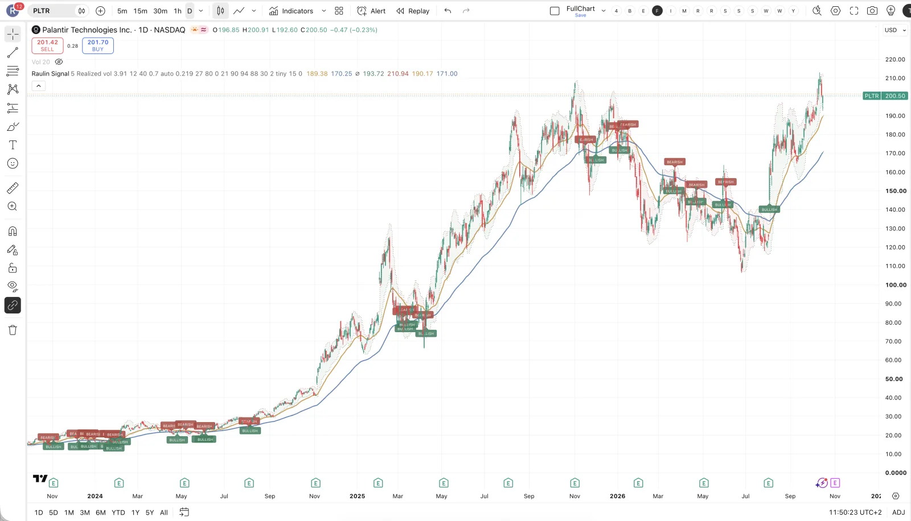
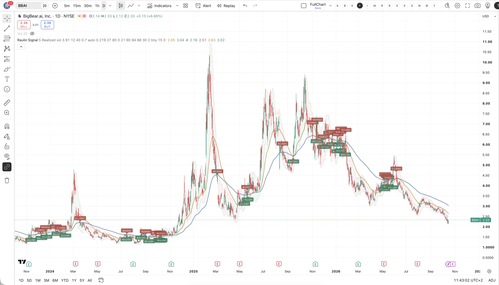

Politik ist keine Bestellung
Ein Erlass und ein Zoll schaffen einen Markt, aber keinen Umsatz. Zwischen Ankündigung und bezahltem Auftrag liegen oft Jahre.

Sechs Firmen, zwei völlig verschiedene Geschäfte und ein Satz von Trump, der beides durcheinanderbringt. Hier steht, wer was macht, welche Zahlen dahinterstehen — und warum fast alle diese Aktien heute tiefer stehen als vor einem Jahr.
Trump sagt, auf dem Dach solle das größte Drohnen-Imperium stehen, und es solle Washington beschützen. Beschützen heißt: fremde Drohnen erkennen und runterholen. Das ist eine eigene Branche — sie heißt Drohnenabwehr, auf Englisch Counter-UAS.
Drohnen bauen ist etwas anderes. Beide Geschäfte wachsen gerade, aber sie haben verschiedene Kunden, verschiedene Margen und verschiedene Risiken. Wer die Aktien danach sortiert, sieht sofort, welche Firma zu welchem Satz gehört — und welche zu keinem von beiden.
Der Krieg in der Ukraine hat etwas gezeigt, das jede Armee der Welt mitgeschrieben hat: Drohnen, von denen viele aus iranischer Bauart stammen, schalten Gerät aus, das ein Vielfaches kostet. Drohnen sind die neue Kriegsführung — nicht mehr Zubehör, sondern eine eigene Waffengattung. Entsprechend fließt gerade überall Geld in Verteidigung.
Dazu kommt ein zweites Problem: Die meisten Drohnen kommen bis heute aus China. Washington zieht daraus zwei Konsequenzen. Ein Erlass vom Juni 2025 verpflichtet Bundesbehörden darauf, amerikanische Geräte zu bevorzugen. Und seit dem 13. August 2026 stehen Zölle von bis zu hundert Prozent auf eingeführte Drohnen und Bauteile. Das ist kein Stimmungsbild, das ist eine Markteintrittsbarriere per Gesetz.
| Firma | Kürzel | Geschäft | Größe |
|---|---|---|---|
| AeroVironment | AVAV | baut & wehrt ab | rund 2 Mrd. $ Umsatz |
| Kratos | KTOS | baut Kampfdrohnen | 1,75–1,81 Mrd. $ erwartet |
| DroneShield | DRO | reine Abwehr | rund 261 Mio. A$ gebucht |
| Ondas | ONDS | Abwehr & Aufklärung | 525–550 Mio. $ erwartet |
| Palantir | PLTR | Software fürs Militär | Schwergewicht |
| BigBear.ai | BBAI | Software, keine Drohnen | 135–165 Mio. $ erwartet |
Der Platzhirsch. AeroVironment baut die Drohnen, die das US-Militär tatsächlich einsetzt, und deckt über die übernommene Sparte auch die Abwehr ab. Damit ist es die einzige Firma auf dieser Liste, die auf beiden Seiten verdient.
Die Zahlen: Im letzten Geschäftsjahr Aufträge über 2,7 Milliarden Dollar bei rund 2 Milliarden Umsatz. Der fest finanzierte Auftragsbestand liegt bei 1,5 Milliarden, 37 Prozent mehr als ein Jahr davor. Auf jeden Dollar Umsatz kamen zuletzt 1,40 Dollar neue Aufträge.
Und jetzt der Teil, der im Chart steht: Die Aktie hat seit dem Hoch im Herbst 2025 den größten Teil ihres Werts verloren — trotz Rekordaufträgen. Der Markt hatte die Erwartung weiter vorgeschoben als das Geschäft. Das ist die Lehre dieser Seite: Aufträge sind nicht gleich Kurs.

„Drohnen-Imperium" im wörtlichen Sinn. Kratos baut unbemannte Kampfflugzeuge — die Valkyrie ist das bekannteste —, dazu Zieldrohnen und Antriebe.
Die Zahlen: Für 2026 werden 1,75 bis 1,81 Milliarden Dollar Umsatz erwartet, organisch 18 bis 23 Prozent Wachstum. Der Auftragsbestand liegt bei rund 2,1 Milliarden, die Pipeline bei 15 Milliarden. Die Valkyrie-Produktion soll bis Anfang 2028 auf etwa 40 Stück im Jahr hochlaufen.
Die Umsätze der unbemannten Sparte schwanken stark von Quartal zu Quartal, weil alles an einzelnen Verträgen hängt. Und auch hier steht die Aktie heute deutlich tiefer als vor einem Jahr.

Der reinste Vertreter des Themas und der Name, der am genauesten zu Trumps Satz passt: DroneShield macht nichts anderes, als fremde Drohnen zu erkennen, zu stören und abzuwehren. Wer auf Drohnenabwehr setzen will, ohne ein ganzes Rüstungskonglomerat mitzukaufen, ist hier am direktesten dran.
Die Zahlen: Im ersten Halbjahr 2026 125,8 Millionen australische Dollar Umsatz, 74 Prozent mehr als im Vorjahr. Fest gebucht sind für das Jahr rund 261 Millionen. Auf dem Konto liegen 180 Millionen, Schulden gibt es keine. Dazu ein US-Rahmenvertrag über bis zu 500 Millionen Dollar auf drei Jahre.
Drei Dinge gehören dazu. Erstens ist dieser Rahmenvertrag eine Obergrenze, kein Auftrag — abgerufen werden muss er erst. Zweitens war das operative Ergebnis im ersten Halbjahr trotz des Wachstums negativ. Und drittens läuft seit Mai 2026 eine Untersuchung der australischen Finanzaufsicht, die auf der Aktie lastet. Die Notierung ist australisch — prüf vorher, ob dein Broker sie überhaupt anbietet.

Der Aufsteiger. Ondas baut autonome Sicherheitsdrohnen und Abfangsysteme — also ebenfalls das, was „Washington beschützen" bedeutet.
Die Zahlen: Im zweiten Quartal 2026 83,8 Millionen Dollar Umsatz — im selben Quartal des Vorjahres waren es 6,3 Millionen. Der Auftragsbestand lag zum Jahreswechsel bei 68 Millionen und Ende Juni bei rund 613 Millionen, mit den im dritten Quartal abgeschlossenen Zukäufen rechnerisch bei rund 757 Millionen. Die Jahresprognose wurde von mindestens 390 auf 525 bis 550 Millionen angehoben.
Das Wachstum kommt zu einem erheblichen Teil aus Zukäufen, nicht nur aus eigener Kraft. Und eine Firma, die ihren Umsatz in einem Jahr verdreizehnfacht, ist per Definition schwer zu bewerten.

Beide bauen keine Drohnen und wehren keine ab. Sie werten aus, was Drohnen und Sensoren liefern. Das ist ein echtes Geschäft — nur eben ein anderes. Und der Vergleich der beiden ist lehrreich.
Palantir ist das, was BigBear.ai gern wäre: dieselbe Idee, nur mit Verträgen, Größe und Gewinn. Die Aktie steht nahe ihrem Höchststand — und ist entsprechend teuer bewertet. Wer das Thema „Software fürs Militär" will, bekommt hier die funktionierende Version, zahlt aber auch dafür.

BigBear.ai taucht in fast jedem Drohnen-Video auf, und ich halte das für einen Fehler. Im zweiten Quartal 2026 36,7 Millionen Dollar Umsatz, 13 Prozent mehr als im Vorjahr, und rund 410 Millionen Dollar auf dem Konto — mehr, als die Firma in drei Jahren umsetzt.
Dafür zwei Punkte, die seltener genannt werden: Der Auftragsbestand ist im zweiten Quartal gefallen, von rund 282 auf 270 Millionen. Und operativ wird weiter Geld verbrannt. Die große Kasse ist ein Polster, kein Beweis für ein funktionierendes Geschäft.

Fünf von sechs Aktien auf dieser Seite stehen heute deutlich tiefer als vor einem Jahr — während die Aufträge bei fast allen auf Rekord stehen. Das ist kein Widerspruch, sondern der Normalfall bei politisch getriebenen Themen: Zuerst kauft der Markt die Ankündigung, dann kommt die Ernüchterung über das Tempo, und erst danach kommen die Umsätze.
Die einzige Ausnahme ist Palantir — und das ist die Firma, die ihre Umsätze bereits liefert.
Ein Erlass und ein Zoll schaffen einen Markt, aber keinen Umsatz. Zwischen Ankündigung und bezahltem Auftrag liegen oft Jahre.
Bei AVAV und KTOS stiegen die Aufträge auf Rekord, während die Aktien zwei Drittel verloren. Gute Nachrichten garantieren nichts.
ONDS, DRO und BBAI sind gemessen an den Rüstungsriesen winzig. Einzelne Verträge bewegen hier den ganzen Kurs.
Ein Regierungsstillstand hat schon einmal dafür gesorgt, dass Aufträge nicht freigegeben wurden. Das kann jederzeit wieder passieren.
Nach Geschäft, nicht nach Schlagzeile. Wer auf Trumps Satz setzen will, setzt auf Abwehr — das sind DroneShield und Ondas, bei AeroVironment ist es ein Teil des Geschäfts. Wer auf das Militärthema insgesamt setzt, landet bei AeroVironment und Kratos.
Nach Größe. AeroVironment, Kratos und Palantir sind etablierte Firmen. Die anderen drei sind klein, und zwei davon verdienen operativ noch kein Geld. Das gehört in die Positionsgröße, nicht in die Begeisterung.
Keine dieser sechs ist für mich ein Selbstläufer. Das Thema ist echt, der Zeitpunkt ist politisch gemacht — und genau deshalb ist die Schwankung hier größer als bei fast allem anderen.